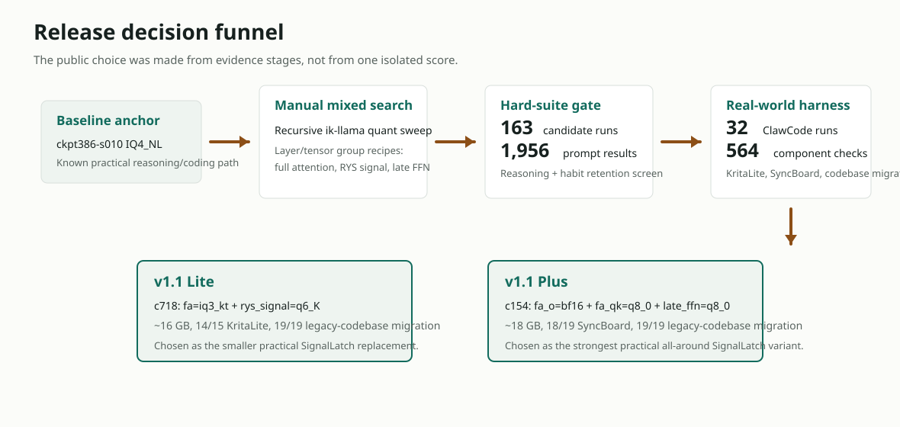
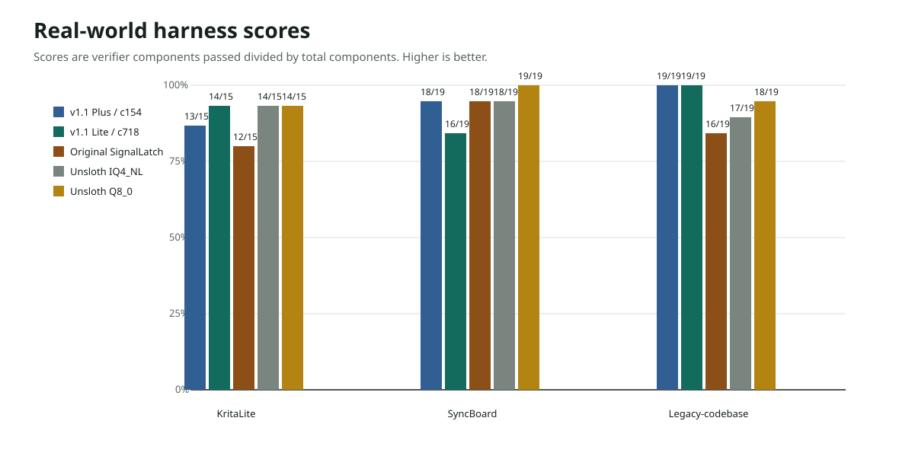
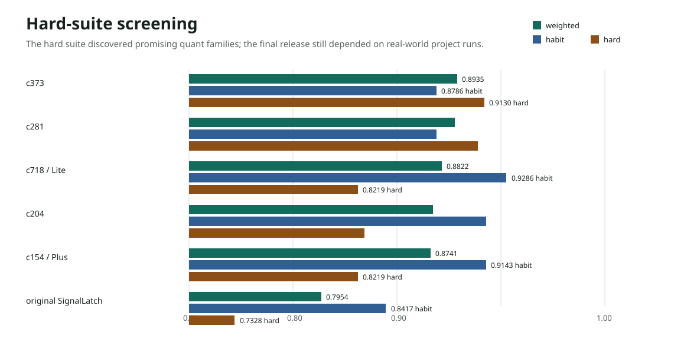
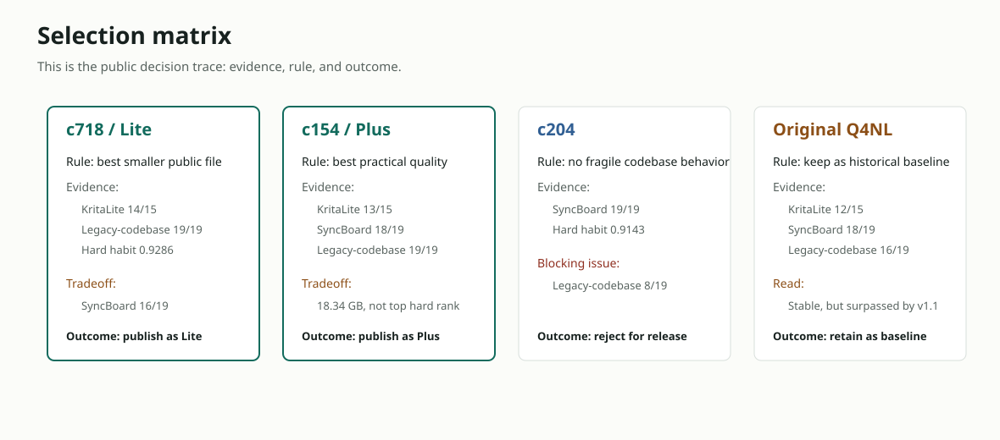

Lite
Qwen3.6-27B-AEON-RYS-SignalLatch-v1.1-Lite-Mixed-Q4NL.gguf
Internal candidate: c718_fa_iq3kt_ryssig_q6k. About 16 GB. Best smaller public variant.
Production quantization record
This page records the sequential production process behind the v1.1 mixed-quant GGUFs: what was tested, which candidates were rejected, how the real-world agent harnesses were designed, and why two release files were selected instead of one.

The first published SignalLatch runtime file was based on the original reasoning/coding IQ4_NL quantization path. It was the practical deployment target for the checkpoint-386 SignalLatch behavior merge.
The v1.1 release candidates keep that small-file goal, but were selected with stronger emphasis on retaining fine-tuned SignalLatch habits after quantization: review-before-edit behavior, instruction latching, tool-shaped reasoning, repair from evidence, and validation before completion.
Final decision: publish two files. Lite is the smaller practical replacement for the original Q4NL-style upload. Plus is the best practical quality file from the current evidence.
Qwen3.6-27B-AEON-RYS-SignalLatch-v1.1-Lite-Mixed-Q4NL.gguf
Internal candidate: c718_fa_iq3kt_ryssig_q6k. About 16 GB. Best smaller public variant.
Qwen3.6-27B-AEON-RYS-SignalLatch-v1.1-Plus-Mixed-Q4NL.gguf
Internal candidate: c154_fao_bf16_faqk_q8_lateffn_q8. About 18 GB. Best all-around practical quality variant.
| Public file | Role | Internal candidate | Size | SHA256 |
|---|---|---|---|---|
SignalLatch-v1.1-Lite-Mixed-Q4NL |
Smaller practical release | c718_fa_iq3kt_ryssig_q6k |
~16 GB | 631b54e141369f9a8d7eed9c1e81a3e187f60fb579d322b744a8ba79c36a96a5 |
SignalLatch-v1.1-Plus-Mixed-Q4NL |
Best practical quality | c154_fao_bf16_faqk_q8_lateffn_q8 |
~18 GB | e589a0b7dba56eb04c3ea621da7ddb9e27152a78ee9ddd088c0115e26b1bb9b1 |
The public filenames hide the internal recipe details, so they are reproduced here. These are the exact candidate recipes that became the two uploaded v1.1 files.
| Public release | Internal candidate | Generator / phase | Recipe summary | Exact tensor-group rules | Bytes |
|---|---|---|---|---|---|
| v1.1 Lite | c718_fa_iq3kt_ryssig_q6k |
expanded_mixed_habit_v2_ik, phase 7 |
Full-attention Q/K/V/O tensors at iq3_kt; RYS 15..24 signal-path tensors at q6_K. |
full-attention attn_(q|k|v|output)=iq3_ktRYS 15..24 attn_qkv/attn_gate/ssm_(out|alpha|beta)=q6_K |
16,399,216,704 |
| v1.1 Plus | c154_fao_bf16_faqk_q8_lateffn_q8 |
expanded_mixed_habit_v1, phase 8 |
Full-attention output tensors at bf16; full-attention Q/K tensors at q8_0; late FFN gate/down tensors at q8_0. |
full-attention attn_output=bf16full-attention attn_(q|k)=q8_0late blk 56/60/64/68 ffn_(down|gate)=q8_0 |
18,338,723,392 |
This page is written as a self-contained production record. A reader does not need the private build folders, server logs, or internal notes to understand what was tested and why these two files were uploaded.
The model family is Qwen3.6 27B. The public files here are GGUF runtime artifacts intended for the custom AEON / ik-llama path used by the main SignalLatch model card.
SignalLatch is the checkpoint-386 behavior fine-tune/LoRA merge. The release baseline used a 0.10 LoRA merge into the model before quantization.
The v1.1 files are not ordinary single-type Q4 or Q8 conversions. They are mixed-quant candidates where different tensor groups were assigned different ik-llama quantization types, then tested for behavior retention.
The goal was not to make the smallest possible file. The goal was to keep the finetuned coding-agent habits while staying much closer to a practical Q4-size deployment than a full Q8 or BF16 artifact.
c718 or c154. The public files rename those candidates as Lite and Plus.
The numbers on this page separate screening runs from production-style real-world runs. The hard-suite count used for the public decision is the stable promotion summary: 163 candidate runs multiplied by 12 core prompt tasks, for 1,956 prompt-level scored results. Later workspace aggregates contain additional replay/recursive artifacts; those were useful for investigation, but they were not treated as independent public release votes.
The real-world phase used 32 ClawCode harness runs across three project tasks. Those runs produced 564 verifier component checks: 11 KritaLite runs times 15 components, 8 SyncBoard runs times 19 components, and 13 legacy-codebase migration runs times 19 components.
The fine-tune was aimed at a natural coding-agent workflow: a user gives an implementation direction, not a complete patch. The model should inspect the repository, infer the architecture, choose a narrow production slice, edit carefully, run verification, and revise from failures.
The process was deliberately conservative: keep the known-good reasoning/coding path as the anchor, then test whether new mixed quantization patterns preserved the SignalLatch behavior habits in realistic coding-agent work.
The original online file, ckpt386-s010-IQ4_NL, came from the checkpoint-386 SignalLatch LoRA merged at strength 0.10 and quantized through the practical reasoning/coding imatrix path. That artifact stayed as the public baseline.
A process/habit imatrix was built to emphasize the fine-tuned behavior loop, but the first process-imatrix Q4NL checks did not clearly beat the existing coding-agent path. The decision was to preserve the reasoning/coding imatrix anchor and search for layer-level mixed quantization patterns that better retained SignalLatch habits.
The fast gate used 12 tasks covering exact reasoning, linked reasoning, command lifecycle behavior, evidence-before-edit habits, repair loops, context sufficiency, and calibrated uncertainty. This produced 163 hard-suite candidate runs and 1,956 scored prompt-level results.
Short prompts and exact checks are useful, but they do not fully simulate a coding-agent session. The next phase moved to ClawCode harnesses where the model had to inspect a workspace, infer structure, edit files, run tests, and recover from failures.
The finalists were compared against the original SignalLatch Q4NL file and Unsloth Qwen3.6 IQ4_NL and Q8_0 GGUF baselines. This prevented the release from being judged only against earlier internal candidates.
c154 was the strongest practical all-around file. c718 was the better smaller release story: it beat the original online SignalLatch file on the Krita-like task and the legacy-codebase migration task, while staying near the original practical size class. Because the smaller and higher-quality goals were different, both were kept.
The tests were split into two layers. The first layer was a fast reasoning/habit gate that could screen many quantization candidates. The second layer was a real-world ClawCode harness that forced candidates to act like coding agents inside project folders.
The hard-suite gate used 12 prompt tasks. It was not meant to replace coding tests; it was used to eliminate candidates that lost the fine-tuned process habits or basic hard reasoning before spending hours on project runs.
| Task ID | Category | What it checked |
|---|---|---|
crt_exact_1136 | Exact hard reasoning | Chinese-remainder arithmetic with a required short check. |
state_machine_exact_8_minus5 | Exact hard reasoning | Step-by-step state tracking without skipping conditional updates. |
binary_strings_exact_126 | Exact hard reasoning | Combinatorics with no-adjacent-ones gap reasoning. |
dependency_chain_project_order | Linked reasoning | Diagnose a pipeline issue without rewriting a passing parser. |
deadlock_ordering_plan | Hard reasoning | Order-sensitive debugging plan for a deadlock/concurrency-style failure. |
agent_context_sufficiency | SignalLatch habit | Notice when more repository context is needed before editing. |
command_lifecycle_control | SignalLatch habit | Manage long-running commands, logs, ports, and process cleanup. |
repair_from_failure_signal | SignalLatch habit | Use concrete failure output to plan the next patch. |
restrained_delegation | SignalLatch habit | Delegate only bounded, parallelizable work; avoid dumping blocking work. |
preserve_user_changes | SignalLatch habit | Handle dirty worktrees without reverting unrelated user changes. |
complex_project_plan_hard | Hard project planning | Design a practical quant sweep using limited llama-server slots and GPU pools. |
uncertainty_and_evidence | SignalLatch habit | Give a calibrated model-selection answer when the evidence is mixed. |
The real-world tests were designed to be closer to a human asking an agent to build or modify something in a project, rather than a benchmark prompt that names every target file and every implementation detail.
A small browser paint application. The model had to implement a raster document engine, wire enough UI to be credible, preserve the file structure, and pass visible plus hidden tests.
15 verifier components: 6 visible, 4 hidden, 5 structural/scope checks.
A local-first project-board app. The model had to implement a CommonJS state engine, browser UI, import/export, undo/redo, filtering, deterministic activity logs, merge behavior, and replay.
19 verifier components: 6 visible, 8 hidden, 5 structural/scope checks.
A private legacy agent-system codebase. The model had to implement a narrow production slice toward session memory, object/item indexing, evidence packets, and hard-facts verification while preserving the old retrieval path.
19 verifier components: code changes, tests, scope, feature gating, evidence packets, hard-facts lane, RAGFlow preservation, and deterministic no-LLM paths.
Runs used large-context local llama-server instances with 160k context and f16 K/V cache in the final practical harness setup. Candidates were scheduled across high-end and small-GPU pools.
The important point for readers: candidates were tested as deployed coding agents, not as one-shot text completions.
These are the public scoring categories used to interpret the project runs. The private source files are not needed to understand the result tables below.
The prompts below are included so the page is readable without access to our local harness folders.
In the third prompt, "SLOANE OS" refers to a private legacy agent-system repository used as a realistic existing-codebase target. The public relevance is the task shape: a nontrivial migration inside an already-existing codebase with constraints, tests, and old behavior that must be preserved.
You are working in a small browser paint application called KritaLite. The project is intentionally incomplete. Fix it as a production-quality patch, not as a test-only patch. Keep the current file structure unless a focused helper makes the implementation clearer. Core goals: 1. Implement the raster document engine in src/kritalite.js. - Layers must preserve order, visibility, opacity, blend mode, lock state, names, and pixels. - Compositing must support normal, multiply, and screen blend modes with layer opacity and source alpha. - Brush strokes must interpolate between points, support size, color, opacity, and optional selection clipping. - Eraser strokes must reduce alpha instead of painting white. - Flood fill must respect tolerance and the active selection. - Selection copy, paste, and transform must preserve pixel data and clip to the document bounds. - Undo and redo must be deterministic, deep-copy document state, and cover drawing, layer changes, selection changes, paste, fill, and transforms. - Serialization/deserialization must round-trip the complete document state with a version marker. 2. Keep the browser UI contract in index.html and src/app.js. 3. Run the visible tests with npm test. There is also a hidden verifier. Do not delete tests, avoid hard-coded answers, do not vendor dependencies, and keep the solution scoped to KritaLite.
Build the SyncBoard app in this repository. The goal is a local-first project board that can be used offline. Keep the app small and focused. Do not add external dependencies or a backend. Required deliverables: - Implement src/syncboard.js. - Keep index.html, styles.css, and src/app.js usable as a simple browser UI. - Keep the existing visible tests intact. - Use plain JavaScript and Node-compatible CommonJS exports. Required core API: - createBoard, addColumn, addCard, updateCard, moveCard, deleteCard - undo, redo, filterCards, exportBoard, importBoard - mergeBoards, replayActivity Behavior requirements: - Preserve card IDs across moves, export/import, undo/redo, and merge operations. - Clip out-of-range move indices. - Undo/redo must cover add/update/move/delete operations. - Filtering must support text, labels, dueBefore, dueAfter, and archived. - Import must throw on invalid JSON or invalid board shape. - Activity log IDs must be deterministic and look like evt-000001. - Merge must preserve non-conflicting edits, report same-field conflicts, and let deletion win over edit/move conflicts. Before finishing, run npm test and fix failures.
I have an issue in this legacy SLOANE OS repo. The memory architecture is still too RAGFlow-heavy, and the compiled/general-knowledge path does not keep deterministic source proof strongly enough. I want the next production slice of the migration toward: - SimpleMem for session continuity and user/project memory. - An object/item indexer for immutable local bytes, references, chunks, and evidence packets. - A secondary hard-facts lane for deterministic claim verification. Please work agentically: 1. Explore the repo first and infer the existing architecture before editing. 2. Review the safest narrow production slice to implement. 3. Implement that slice. 4. Add focused tests or a runnable verification path. 5. Run what you can, then refine based on failures. Constraints: - Do not remove, disable, or rewrite the existing RAGFlow path. - Preserve current defaults unless the new behavior is explicitly feature-flagged or opt-in. - Treat SimpleMem as continuity memory, not source proof. - Hard facts must be backed by local evidence packets or immutable item references. - Avoid API-model/LLM dependencies in deterministic indexing, compiling, or claim-verification paths. - Keep the change scoped. Do not do a broad architecture rewrite. Leave a concise final summary covering what changed, what files matter, what tests you ran, and any remaining risks.
Each harness measures a different failure mode. The final decision did not come from a single table. The selected files had to survive multiple task shapes without losing the intended SignalLatch behavior.
c718 beat the original online file on KritaLite and the legacy-codebase migration task, but was weaker on SyncBoard.
Object-memory migration: 19/19.
c154 had the cleanest overall profile: perfect object-memory result, strong SyncBoard, and good KritaLite.
Object-memory migration: 19/19.
Unsloth Qwen3.6 IQ4_NL and Q8_0 were included so internal candidates were not judged in isolation.
Unsloth Q8 object-memory migration: 18/19.
A score such as 14/15 means the verifier found 14 passing components out of 15. The components include visible tests, hidden tests, and structural checks such as preserving scope, not deleting tests, and avoiding dependency churn. A model could complete the visible task but still lose points on hidden edge cases or production discipline.
The ClawCode return code was not used alone as the quality score. The verifier inspected the produced workspace and counted behavior-specific components. This mattered because some useful agent runs ended with a non-zero command return while still producing a correct, testable patch.

This is the public version of the project "homework": prompts, verifier categories, numeric results, observed failures, and decision rules. It is not a private chain-of-thought dump. The auditable trail is evidence-first: what was observed, what rule it triggered, and what action followed.
| Stage | Evidence observed | Decision rule | Action taken |
|---|---|---|---|
| Initial public baseline | The first SignalLatch ckpt386-s010-IQ4_NL file was stable and practical, but not dominant in later real-world tasks. |
Keep it as a reproducibility baseline, not the final v1.1 recommendation. | Left the original file online and compared all finalists against it. |
| Habit/process imatrix check | The habit/process imatrix idea did not clearly beat the known reasoning/coding imatrix path in early coding-agent checks. | Do not replace a known-good calibration path unless the evidence is clear. | Kept the reasoning/coding imatrix anchor and searched mixed-quant tensor recipes instead. |
| Hard-suite screen | c373 and c281 led weighted hard-suite score, while c718, c204, and c154 showed strong habit retention. |
Do not promote from hard-suite score alone; use it to choose real-world finalists. | Advanced promising candidates into project-level ClawCode harnesses. |
| KritaLite | c718, c76, Unsloth IQ4_NL, and Unsloth Q8_0 reached 14/15. Original SignalLatch reached 12/15. |
Reward project implementation strength, but check if it generalizes beyond a canvas app. | Kept c718 in contention for the smaller release. |
| SyncBoard | c204 and Unsloth Q8_0 reached 19/19; c154 reached 18/19; c718 dropped to 16/19. |
A SyncBoard win is useful, but not enough if the model fails natural existing-codebase work. | Kept c154 as a balanced candidate; treated c718 as a smaller-file tradeoff. |
| Legacy-codebase migration | c718 and c154 both reached 19/19. c204 fell to 8/19. Original SignalLatch reached 16/19. |
The fine-tune target is existing-codebase agentic work, so this task has high release weight. | Selected c718 as Lite and c154 as Plus; rejected c204. |
| Candidate | Public role | KritaLite | SyncBoard | Legacy-codebase migration | Decision read |
|---|---|---|---|---|---|
c154_fao_bf16_faqk_q8_lateffn_q8 |
v1.1 Plus | 13/15 | 18/19 | 19/19 | Best practical all-around release candidate. |
c718_fa_iq3kt_ryssig_q6k |
v1.1 Lite | 14/15 | 16/19 | 19/19 | Best smaller release candidate, with a SyncBoard tradeoff. |
ckpt386-s010-IQ4_NL |
Original online SignalLatch baseline | 12/15 | 18/19 | 16/19 | Stable first release, no longer the strongest candidate overall. |
unsloth_iq4nl |
External compact baseline | 14/15 | 18/19 | 17/19 | Very competitive compact external baseline. |
unsloth_q8_0 |
External high-quality baseline | 14/15 | 19/19 | 18/19 | Strong baseline; useful reference for practical quality. |
The tables below are the project-level results used for the final public selection. They include both selected files, the first online SignalLatch Q4NL baseline, and the Unsloth baselines where those were available.
| Candidate | Score | Read |
|---|---|---|
c718_fa_iq3kt_ryssig_q6k | 14/15 | Selected as v1.1 Lite; tied the best score in this harness. |
c76_fa_q6k_outtok_bf16 | 14/15 | Strong, but larger and poor in the legacy-codebase migration run. |
unsloth_iq4nl | 14/15 | Strong compact external baseline. |
unsloth_q8_0 | 14/15 | Strong high-quality external baseline. |
c05_all_fullattn_bf16 | 13/15 | Good but larger and not selected. |
c154_fao_bf16_faqk_q8_lateffn_q8 | 13/15 | Selected as v1.1 Plus because later harnesses were stronger. |
c204_fao_iq4kss | 13/15 | Good here, later mixed result. |
c373_fa_iq3kr4 | 13/15 | Good hard-suite candidate, not the final public pick. |
c281_lateffn_iq3kt | 12/15 | Not strong enough in this project run. |
c311_outtok_iq3kt | 12/15 | Not strong enough in this project run. |
release_s010_iq4nl | 12/15 | Original online SignalLatch baseline; beaten by Lite and Plus here. |
| Candidate | Score | Primary miss / read |
|---|---|---|
c204_fao_iq4kss | 19/19 | Full pass, but later failed the legacy-codebase migration badly. |
unsloth_q8_0 | 19/19 | Full external baseline pass. |
c154_fao_bf16_faqk_q8_lateffn_q8 | 18/19 | Missed one hidden undo/redo sequence; otherwise strong. |
c373_fa_iq3kr4 | 18/19 | Missed delete-vs-edit merge conflict behavior. |
c76_fa_q6k_outtok_bf16 | 18/19 | Missed a non-conflicting merge combination case. |
release_s010_iq4nl | 18/19 | Missed activity replay rebuilding columns and cards. |
unsloth_iq4nl | 18/19 | Missed delete-vs-edit merge conflict behavior. |
c718_fa_iq3kt_ryssig_q6k | 16/19 | Lite tradeoff: weaker on activity replay and merge-conflict edge cases. |
| Candidate | Score | Verifier tests | Changed files | Read |
|---|---|---|---|---|
c718_fa_iq3kt_ryssig_q6k | 19/19 | 6/6 | 8 | Selected as v1.1 Lite; full component pass and strongest smaller-file evidence. |
c154_fao_bf16_faqk_q8_lateffn_q8 | 19/19 | 5/5 | 5 | Selected as v1.1 Plus; full component pass with a focused implementation. |
c311_outtok_iq3kt | 19/19 | 6/6 | 8 | Full pass but less compelling across the broader public-release comparison. |
c281_lateffn_iq3kt | 18/19 | 3/3 | 4 | Strong but missed tests-added-or-modified. |
unsloth_q8_0 | 18/19 | 3/3 | 5 | Strong external baseline, but missed tests-added-or-modified. |
c404_faqkv_iq5kr4 | 18/19 | 3/4 | 5 | Good component score but one verifier test failed. |
c373_fa_iq3kr4 | 18/19 | 5/5 | 5 | Strong, but missed feature-flag/opt-in discipline. |
c317_out_iq5k | 17/19 | 3/3 | 3 | Good but not a finalist. |
unsloth_iq4nl | 17/19 | 5/5 | 5 | Compact external baseline; behind both v1.1 picks here. |
release_s010_iq4nl | 16/19 | 3/3 | 5 | Original online SignalLatch baseline; behind Lite and Plus here. |
c431_ryspath_q40r8 | 14/19 | 3/3 | 1 | Insufficient production implementation. |
c76_fa_q6k_outtok_bf16 | 8/19 | 3/3 | 1 | Rejected for this release despite good KritaLite score. |
c204_fao_iq4kss | 8/19 | 3/3 | 1 | Rejected despite full SyncBoard pass; failed this natural codebase task. |
The hard suite was used to find promising quantization families before spending time on full project work. Its job was candidate discovery, not final release selection. The table shows the later comprehensive hard-suite view for candidates that affected the release discussion.

c718 and c154 were not the first two hard-suite rankers, but they carried stronger release evidence once the real-world codebase harnesses were added.| Candidate | Weighted hard-suite score | Habit score | Hard score | Interpretation |
|---|---|---|---|---|
c373_fa_iq3kr4 |
0.8935 | 0.8786 | 0.9130 | Best early comprehensive score; kept as a conservative backup. |
c281_lateffn_iq3kt |
0.8916 | 0.8786 | 0.9085 | Strong early hard-suite candidate, less convincing as final release. |
c718_fa_iq3kt_ryssig_q6k |
0.8822 | 0.9286 | 0.8219 | High habit retention; later became Lite because real-world codebase results were stronger than the hard-score rank alone implied. |
c204_fao_iq4kss |
0.8761 | 0.9143 | 0.8263 | Excellent habit score, but later failed the legacy-codebase migration. |
c154_fao_bf16_faqk_q8_lateffn_q8 |
0.8741 | 0.9143 | 0.8219 | Not the hard-suite winner, but excellent in the real-world codebase task and consistent enough to become Plus. |
ckpt386-s010-IQ4_NL |
0.7954 | 0.8417 | 0.7328 | Original public baseline for comparison. |
Unsloth Qwen3.6 remained a strong competitor. The evidence does not support a broad claim that every SignalLatch v1.1 file beats every Unsloth file on every task.
The narrower claim is stronger: v1.1 Lite and Plus were selected because they preserve the SignalLatch fine-tuned coding-agent habits better than the first online SignalLatch Q4NL file in the newer agentic/codebase tests, while remaining in a practical mixed-quant size class.
c718 gave the best smaller-file story: 14/15 on KritaLite, 19/19 on the most natural legacy-codebase task, and stronger evidence than the first online SignalLatch file on the tasks closest to the fine-tune target.
Tradeoff: it is weaker on SyncBoard at 16/19, so it is not described as the universal best candidate.
c154 was the best practical all-around release pick: 13/15 on KritaLite, 18/19 on SyncBoard, and 19/19 on the legacy-codebase migration task. It is slightly larger, but stayed far below a BF16 artifact.
Tradeoff: it was not the top hard-suite ranker; its release case comes from balanced real-world behavior.
c204 looked excellent on some metrics, including a 19/19 SyncBoard result and a strong habit score, but it collapsed to 8/19 on the natural legacy-codebase migration task.
That failure mattered because the fine-tune target is agentic work inside existing codebases.
The original ckpt386-s010-IQ4_NL file remains useful as the historical stable baseline. It scored 12/15 on KritaLite, 18/19 on SyncBoard, and 16/19 on the legacy-codebase task.
It is no longer the recommended best SignalLatch download after the v1.1 sweep.

c718 solved the smaller-file release need, c154 solved the best-practical-quality need, c204 was rejected despite one full-pass harness, and the original Q4NL file remains as the historical baseline.That is why the public naming avoids absolute claims. Lite means smaller practical SignalLatch. Plus means the best practical quality SignalLatch variant from this sweep.